Season 2026 · Miami, FL · From Peru
EstebanGuillen
Graphic designer and video editor based in Miami. I edit and shoot video for political campaigns at Harris Media Group, photograph concerts and design sports and brand content. My videos have passed 1.3 million views.
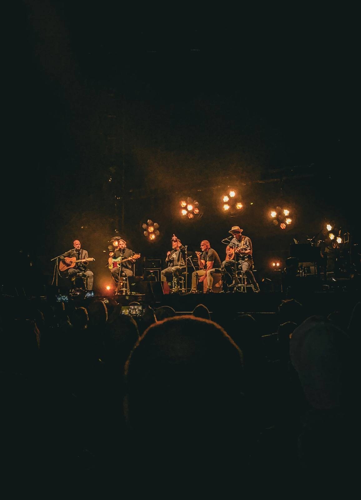


Fixtures
Twelve matches played. Every project is a game with a final score.
views · Sam Gallucci & NH Senate Republicans
views · Bobby Charles for Maine
Peruvian football posters
live concert photos
Highlights
Campaigns, concerts, football and brands in a single strip. Drag to scroll through it.

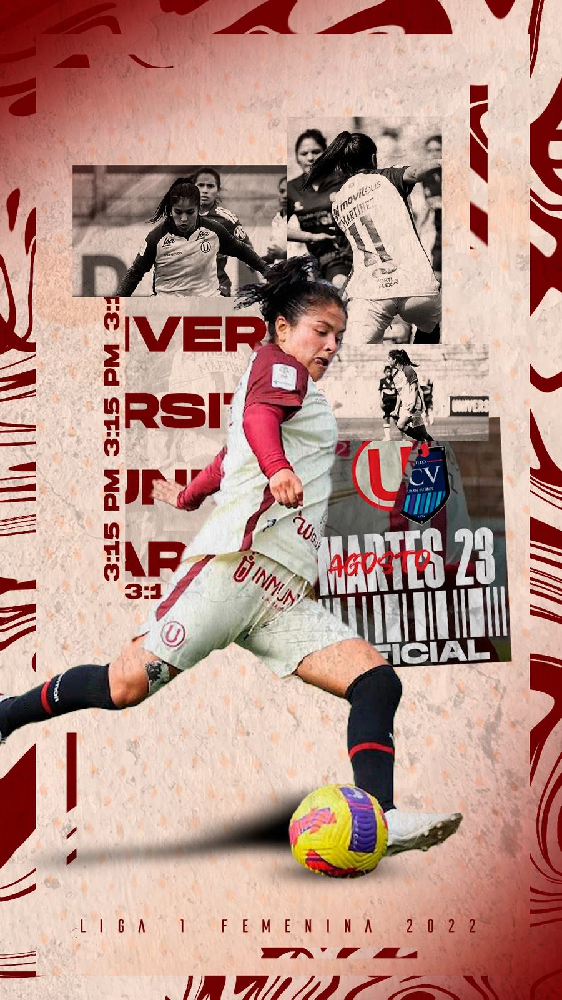


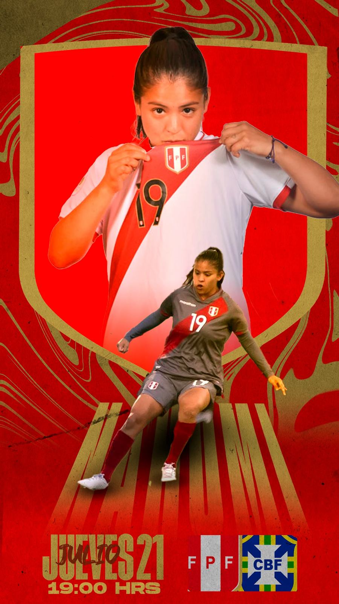


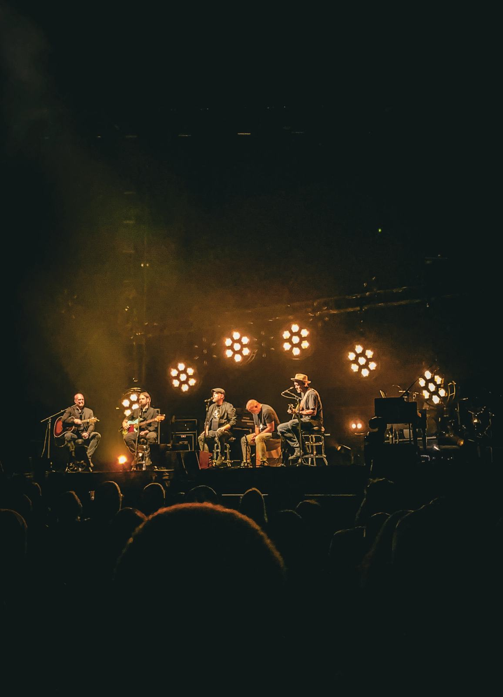


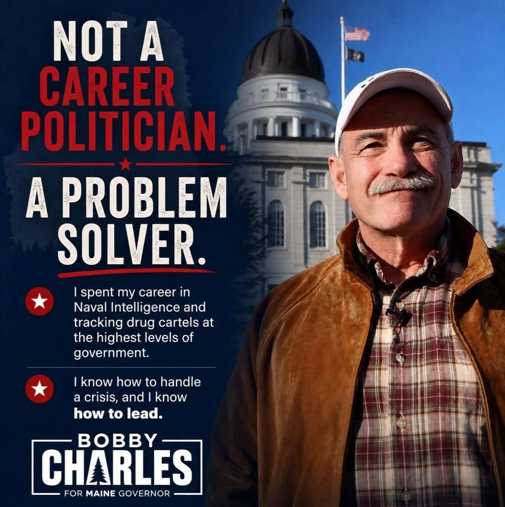


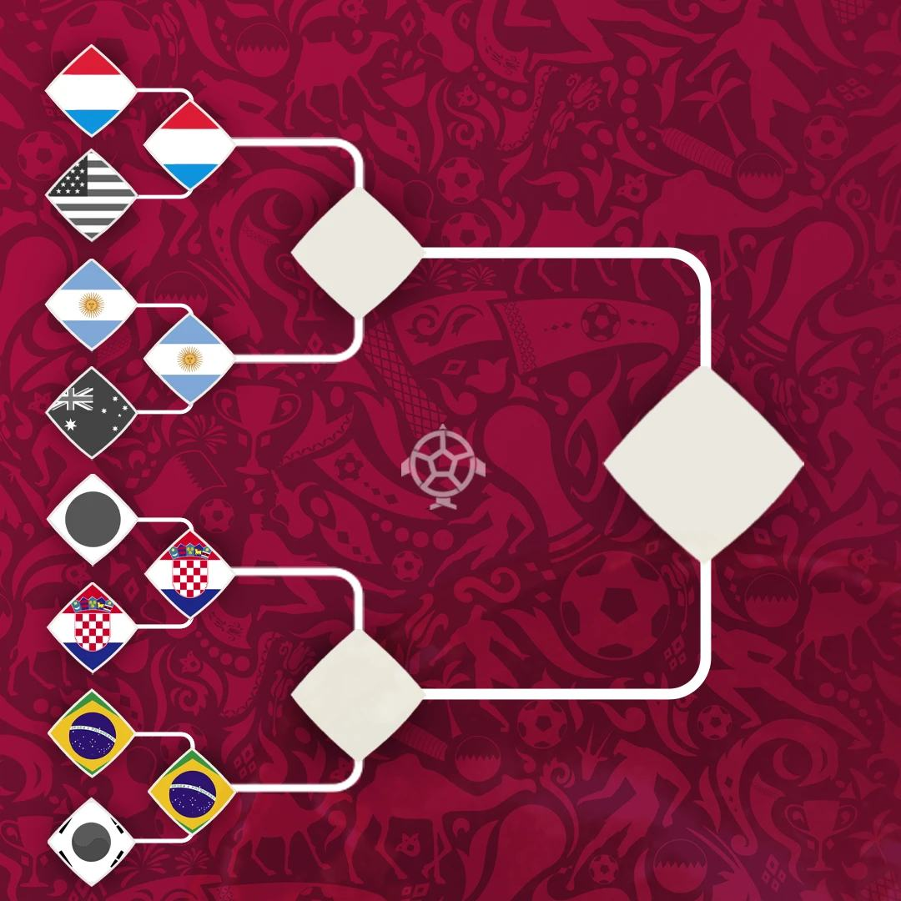

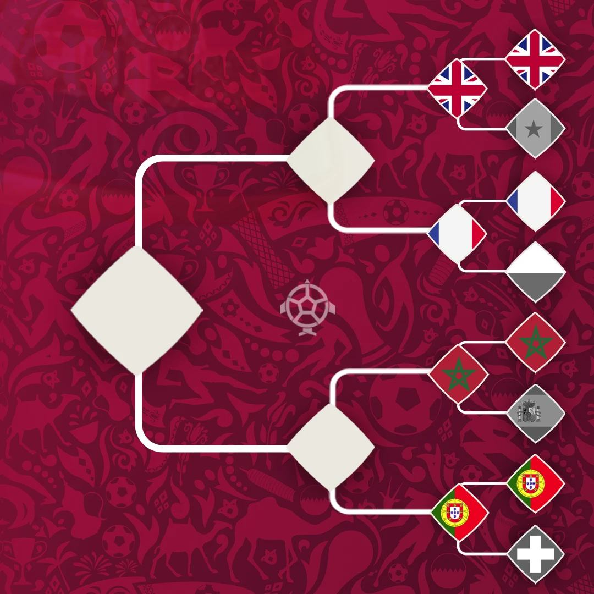


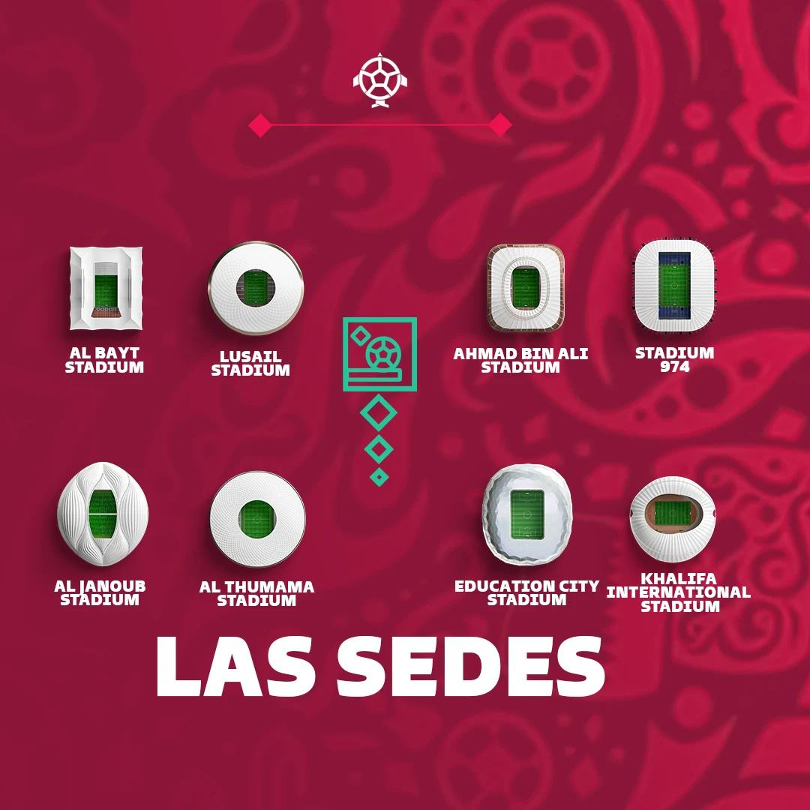

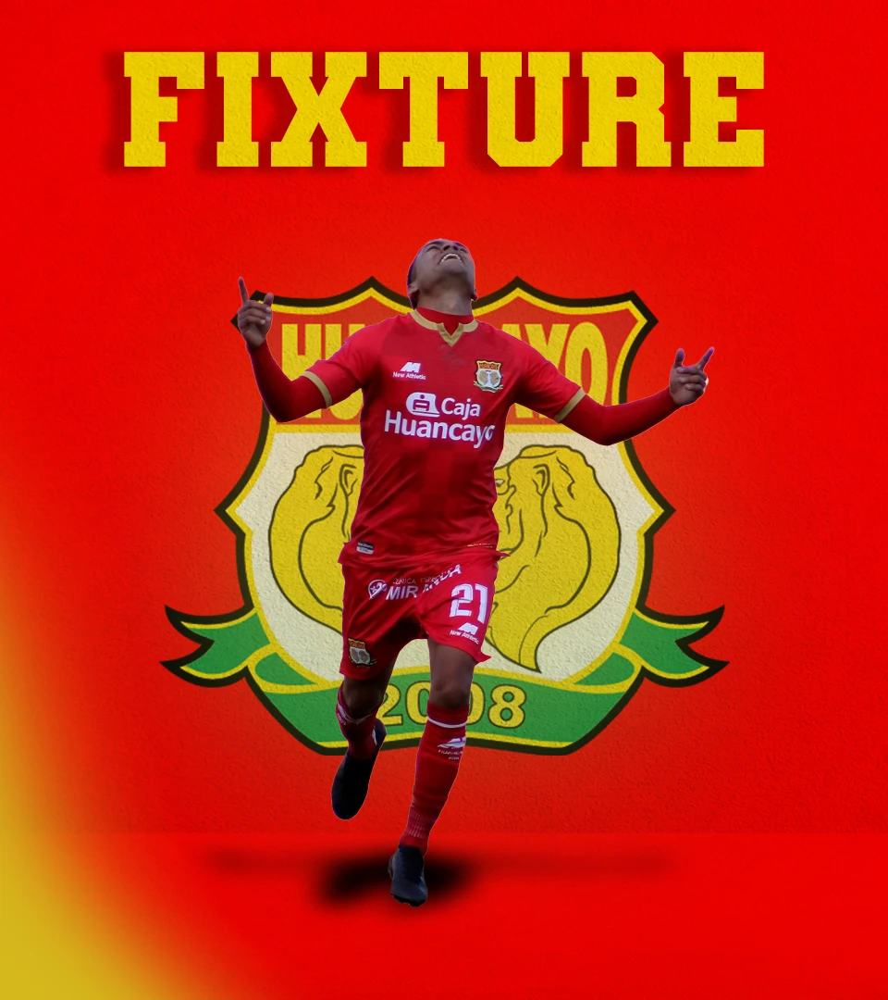


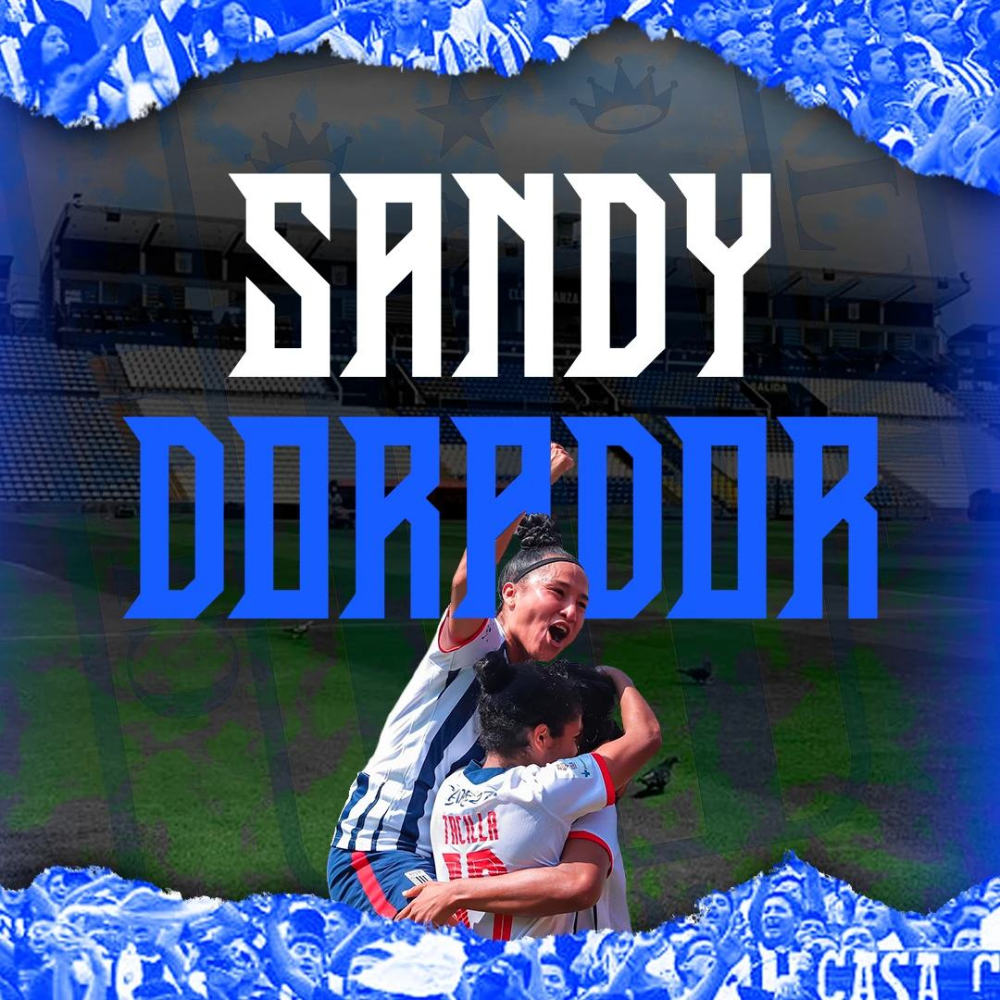

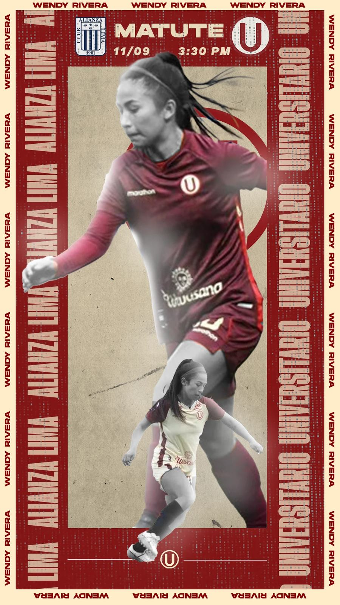


Career
Eight years on the job, from Lima to Miami. View full résumé →
- 2025 — PresentVideo Editor & VideographerHarris Media Group
- 2025 — PresentConcert PhotographerFreelance
- 2022 — 2024Freelance Graphic DesignerClubs, players and brands
- Feb 2022 — Jul 2022Graphic DesignerDigitalia TEC
- Jan 2020 — Jul 2022Graphic DesignerArturo's Burger
- Mar 2018 — Jul 2022Graphic DesignerSoporte Total GUIMI S.A.
Services
What I bring to the pitch. Tap each position.
Campaign video
Editing, motion and social cut-downs for candidates and causes.
Live photography
Concerts and events: full coverage, edited and delivered.
Sports design
Matchday posters, fixtures, signing announcements and player graphics.
Branding and social
Visual systems for brands and monthly content.
Web and UI
Landing pages and online stores designed in Figma.